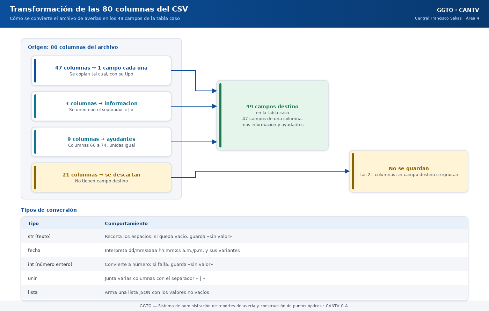
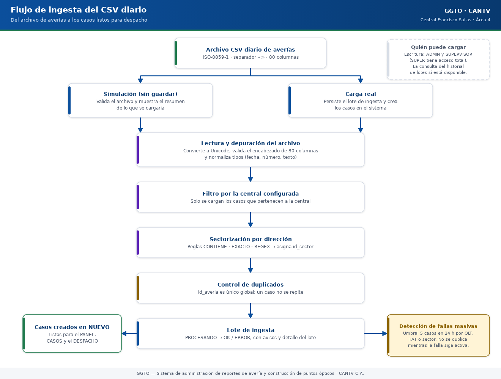

Sistema de administración de reportes de avería y construcción de puntos ópticos
Manual literal · ImplementaciónManual técnico — Ingesta del archivo diario de averías (CSV)
Este manual explica, con palabras sencillas, cómo GGTO recibe el archivo diario de averías que envía el sistema de origen de CANTV, cómo lo limpia y lo revisa, cómo se queda solo con los casos de la central configurada, cómo evita repetidos y cómo crea los casos nuevos. Está dirigido a técnicos de campo, supervisores y administradores de la Central Francisco Salias (Área 4). La aplicación móvil todavía no está desarrollada (el Ciclo 8 quedó pospuesto): la carga se hace desde la interfaz web. Cuando algo no pudo comprobarse, se indica con la frase […]
Este manual explica, con palabras sencillas, cómo GGTO recibe el archivo diario de averías que envía el sistema de origen de CANTV, cómo lo limpia y lo revisa, cómo se queda solo con los casos de la central configurada, cómo evita repetidos y cómo crea los casos nuevos. Está dirigido a técnicos de campo, supervisores y administradores de la Central Francisco Salias (Área 4). La aplicación móvil todavía no está desarrollada (el Ciclo 8 quedó pospuesto): la carga se hace desde la interfaz web. Cuando algo no pudo comprobarse, se indica con la frase «pendiente de confirmar».
1Empezar en 5 minutos
- Abra la página INGESTA en GGTO. Necesita rol Administrador o Supervisor: el rol Técnico solo puede consultar el historial.
- Pulse «Seleccionar archivo» y elija el CSV del día. Si quiere, escriba el identificador de la central; si lo deja vacío, se usa la central configurada.
- Pulse «Simular (preview)». Esa opción no guarda nada: solo muestra cuántas filas leyó, cuántas son de la central, cuántos casos son nuevos y cuántos repetidos.
- Revise el resumen y los avisos. Si aparece el aviso de direcciones que no pertenecen a ningún sector, pulse «Gestionar en SECTOR», elija a qué sector va cada dirección y el sistema vuelve a sectorizar los casos pendientes. Cuando todo esté bien, pulse «Cargar archivo» y confirme. El sistema crea los casos nuevos y deja un registro del lote en el historial.
- Repita la carga con el mismo archivo no duplica nada: los casos ya existentes se cuentan como duplicados.
2Visión general (RF-01/RF-02, RT-05, D-04/D-27/D-41/D-66)
El módulo INGESTA recibe el archivo diario de averías GPON del sistema origen de CANTV, lo depura, filtra los casos de la central configurada, evita duplicados y crea los casos nuevos. Es la puerta de entrada principal del universo de casos de la plataforma.
| Elemento | Valor verificado |
|---|---|
| Requisito de carga del archivo | RF-01 |
| Requisito de perfiles y accesos (contexto) | RF-02 |
| Procesar solo los casos de la central | RF-21 |
| Insertar solo casos nuevos | RF-22 |
| Sectorizar por dirección | RF-23 |
| Criterio de cuadrilla 0 | RF-25 |
| Requisito técnico del analizador | RT-05 |
| Mapeo por posición de columna | Decisión D-04 |
| Depuración del CSV (21 columnas) | Decisión D-27 |
| Contrato de interfaz con el origen | Decisión D-41 |
| Aviso de direcciones sin sector y re-sectorización | Decisión D-66 |
El módulo usa el prefijo /api/v1/ingesta y la etiqueta «ingesta». Su descripción interna
enumera los requisitos que cubre: «RF-01, RF-21, RF-22, RF-23, RF-25, RF-29».
El ciclo D-66 agregó dos capacidades a la ingesta:
- Si una dirección del archivo no pertenece a ningún sector, el resumen lo avisa y muestra la cantidad de casos afectados.
- El botón «Gestionar en SECTOR» permite asignar esa dirección a un sector y, al terminar, volver a sectorizar los casos que habían quedado pendientes, sin recargar el archivo.
La lógica de análisis y de escritura está separada de la capa web:
- El analizador (parser) y el filtro por central viven en un servicio aparte.
- El router del módulo se encarga de leer el archivo subido, armar el resumen, crear el lote e insertar los casos.
- Otro servicio resuelve el sector a partir de la dirección.
- Otro servicio marca los casos que van al supervisor (cuadrilla 0).
- Otro servicio detecta fallas masivas después de la carga.
2.1Roles y permisos del módulo
La escritura (simular y cargar) está restringida a ADMIN y SUPERVISOR. La consulta del
historial de lotes usa la sesión válida, por lo que cualquier usuario autenticado puede
leerla. El rol TECNICO queda en modo solo lectura para este módulo.
3Contrato del archivo origen
El contrato formal está en RepoTecnico/interfaz_csv_origen.md y su estado es borrador
pendiente de firma por CANTV (decisión D-41): «Estado: Borrador para validación y firma
de CANTV».
3.1Nombre y periodicidad
| Atributo | Valor |
|---|---|
| Nombre | detalle_averias_gpon_<fecha>.csv (la fecha cambia cada día) |
| Periodicidad | Diaria, en días hábiles |
| Hora de entrega | Antes de las 08:00, hora de Venezuela |
| Fin de línea | CRLF |
| Encabezado | Primera fila, obligatoria |
| Volumen de referencia | Hasta 20 000 filas por día (meta provisional D-33) |
El nombre del archivo es la referencia de trazabilidad de cada carga: se guarda en el lote con
recorte a 255 caracteres. Si el navegador no envía nombre, se usa el texto sin-nombre.
El canal de entrega definitivo (carpeta o depósito dedicado, o SFTP corporativo) está
«por definir con CANTV», es decir, pendiente de confirmar. Guardar el archivo en Git
está prohibido por contener datos personales, y la lista de archivos excluidos de Git
ignora los que se llaman detalle_averias_gpon*.csv.
3.2Delimitador ;
El delimitador es el punto y coma. En el programa se declara como constante (DELIMITADOR)
y se aplica al lector de CSV de la biblioteca estándar, tanto al leer el encabezado como al
leer las filas. El contrato lo fija igual.
3.3Codificación ISO-8859-1 → UTF-8
| Aspecto | Regla |
|---|---|
| Codificación del origen | ISO-8859-1 (también llamado latin-1 o cp1252), no UTF-8 |
| Constante del analizador | CODIFICACION = "iso-8859-1" |
| Texto con acentos | Puede traer ñ y tildes; hay que decodificar ISO-8859-1 antes de comparar |
La plataforma no transforma el archivo de origen: lo decodifica de ISO-8859-1 a texto
Unicode en memoria y lo guarda en columnas de texto de PostgreSQL. La codificación exacta del
servidor de base de datos (server_encoding) queda pendiente de confirmar. En todo caso,
el texto llega ya decodificado a la base y las comparaciones internas se hacen sobre texto
normalizado, no sobre bytes.
3.480 columnas por posición → 49 campos destino
La plataforma depende de la posición de las columnas, no de su nombre, porque el
encabezado trae rótulos duplicados: informacion aparece dos veces y descripcion tres
veces. El analizador espera 80 columnas y avisa si el encabezado no tiene ese número.
El mapeo completo tiene 49 entradas de la forma «campo de destino, posiciones de origen y tipo de conversión». Los nombres de los campos de destino forman la lista blanca de columnas que se van a insertar.

Código del gráfico (Mermaid)
flowchart LR
subgraph Origen["80 columnas del archivo"]
C1["47 columnas<br/>un campo cada una"]
C2["3 columnas del archivo<br/>se unen en informacion"]
C3["9 columnas del archivo<br/>se unen en ayudantes"]
C4["21 columnas<br/>se descartan"]
end
C1 --> D["49 campos destino<br/>en la tabla caso"]
C2 --> D
C3 --> D
C4 --> X["No se guardan"]3.4.1Tipos de conversión
| Tipo | Comportamiento |
|---|---|
str (texto) |
Recorta los espacios; si queda vacío, guarda «sin valor» |
fecha |
Interpreta dd/mm/aaaa hh:mm:ss a.m./p.m. y sus variantes |
int (número entero) |
Convierte a número; si falla, guarda «sin valor» |
unir |
Junta varias columnas con el separador `" |
lista |
Arma una lista JSON con los valores no vacíos |
Solo dos campos son multi-columna:
informacion: unifica las columnas 31, 32 y 52 del archivo.ayudantes: toma las nueve columnas 66 a 74 del archivo y se guarda en una columna JSONB (un formato de datos que la base guarda como objeto).
3.4.2Aritmética del mapeo
La suma de columnas es coherente con el contrato: 47 campos provienen de una sola columna,
informacion consume 3 columnas y ayudantes consume 9. Es decir, 47 + 3 + 9 = 59 columnas
usadas, y 80 − 59 = 21 columnas descartadas. La cobertura se verifica además con la
prueba test_especificacion_cubre_49_campos.
3.521 columnas descartadas
Las columnas que la plataforma ignora están enumeradas en el contrato y ratificadas por la decisión D-27:
| # | Columna descartada (posición) | # | Columna descartada (posición) |
|---|---|---|---|
| 1 | tipo_reporte (12) |
12 | días transcurridos desde la apertura (48) |
| 2 | dac (13) |
13 | area_resolutoria (49) |
| 3 | ultimo_usuario (20) |
14 | usuario_acciona (53) |
| 4 | fecha_despacho (25) |
15 | fecha_acciona (54) |
| 5 | ciudad (26) |
16 | codigo_causa (56) |
| 6 | servicio_off_on (29) |
17 | descripcion (57) |
| 7 | cliente_notificado (30) |
18 | Subcodigo_causa (58) |
| 8 | fecha_instalacion (35) |
19 | descripcion (59) |
| 9 | ip (37) |
20 | con_serv_aba (60) |
| 10 | tarjeta (38) |
21 | descripcion unificada (52) |
| 11 | ont_id (42) |
Nota: la columna 52 (
descripcion) no se «descarta» en sentido estricto, sino que se unifica dentro deinformacionjunto con las columnas 31 y 32. La decisión D-27 también dejó de llenar el catálogocausadesde el CSV: ahora ese catálogo se administra desde CONFIGURACIÓN.
4Parser
El analizador (parser) es puro: no toca la base de datos. Devuelve las filas ya mapeadas y los avisos. Gracias a eso se puede probar por separado y se usa igual en la simulación y en la carga real.
4.1Decodificación estricta (nunca errors='ignore')
La decodificación intenta leer el contenido como ISO-8859-1 y, si encuentra un error, lanza un mensaje explícito en lugar de silenciar el problema. El contrato exige ese comportamiento: «Codificación inesperada → Falla ruidosa, sin ingesta parcial».
En la práctica ISO-8859-1 cubre los 256 valores de byte, por lo que ese error casi nunca ocurre. Lo importante para el mantenimiento es que no se usa la opción de ignorar errores: un archivo mal codificado no pierde caracteres en silencio. Antes de procesar, se elimina un posible BOM inicial (una marca invisible que algunos programas agregan al principio del archivo).
4.2Fechas dd/mm/aaaa hh:mm:ss a.m./p.m.
El formato de fecha del origen es dd/mm/aaaa hh:mm:ss a.m./p.m., con zona horaria
America/Caracas según el contrato. El analizador primero normaliza las variantes de
meridiano y luego prueba una lista de formatos:
- La normalización de fecha cambia
a. m.,p. m.,a.m.,p.m.y sus variantes sin punto porAMoPM, colapsa espacios y pasa todo a mayúsculas. - La interpretación recorre siete formatos: con y sin segundos, con y sin meridiano, solo
fecha y el formato ISO
aaaa-mm-dd. - Si ninguno coincide, devuelve «sin valor» sin lanzar error.
Las pruebas verifican 17/07/2026 11:38:20 a.m., 10/09/2026 12:00:13 p.m.,
22/08/2026 10:00:00 a. m., 01/01/2026 y 2026-01-01 08:00:00, además de los casos vacíos
o inválidos.
Detalle de implementación: la fecha se interpreta sin zona horaria. Las columnas del modelo sí aceptan zona horaria, de modo que la interpretación final depende de la zona de la sesión de PostgreSQL. La conversión exacta a
America/Caracasqueda pendiente de confirmar.
4.3Normalización de acentos y recorte defensivo
La función de normalización pasa el texto a mayúsculas, aplica normalización Unicode, elimina
los acentos y colapsa los espacios repetidos. Se usa para comparar el código de central y los
patrones de sector sin depender de tildes ni mayúsculas. La prueba
test_normalizar_quita_acentos_y_mayusculas fija el comportamiento esperado.
El recorte defensivo evita que un valor inesperadamente largo aborte la ingesta completa:
- Hay una tabla de límites con la longitud máxima de los campos de texto.
- Al convertir un texto, si supera el límite se recorta y se suma un aviso al contador de recortes.
- Los campos de tipo texto largo de PostgreSQL (por ejemplo, la dirección o el último
comentario) no tienen límite y no se recortan. La prueba
test_campos_de_texto_no_se_recortanlo verifica.
El analizador también descarta de forma defensiva:
- Filas completamente vacías.
- Filas cuyo número de celdas no es 80, contadas como malformadas.
- Filas sin
id_averia, que no se pueden comparar para evitar duplicados.
Los avisos resultantes se acumulan en una lista que acompaña al resumen.
5Flujo de carga
El análisis se centraliza en una sola función interna, que devuelve el resumen, las filas candidatas, la central, los patrones y la configuración. Las dos operaciones de escritura comparten esa función, de modo que la simulación y la carga real aplican exactamente las mismas reglas.

Código del gráfico (Mermaid)
flowchart TD
A["Archivo CSV diario del origen"] --> B["Simular (preview):<br/>no escribe en la base"]
A --> C["Cargar: sí escribe"]
B --> D["Decodificar de ISO-8859-1"]
C --> D
D --> E["Leer 80 columnas por posición"]
E --> F["Filtrar solo la central configurada"]
F --> G["Descartar repetidos dentro del archivo"]
G --> H["Descartar los que ya existen en la base"]
H --> I["Sectorizar cada caso por su dirección"]
I --> J["Marcar el criterio de cuadrilla 0"]
J --> K["Crear los casos nuevos y registrar el lote"]
K --> L["Detectar fallas masivas"]5.1Preview
La operación POST /api/v1/ingesta/preview lee el archivo, ejecuta el análisis y devuelve el
resumen sin escribir en la base de datos. También fija el nombre del archivo en el
resumen. La prueba test_preview_no_guarda comprueba que no se crea ningún caso y que no hay
identificador de lote.
5.2Carga y creación de ingesta_lote
La operación POST /api/v1/ingesta responde 201 Created. La secuencia es:
- Se analiza el archivo.
- Se crea el lote con estado «PROCESANDO» y el P00 del usuario que carga.
- Se pide a la base el identificador del lote antes de insertar los casos.
- Por cada fila candidata se construye un caso con los 49 campos, la central, el lote, el
sector, la marca de cuadrilla 0, el origen
INGESTA_CSVy el P00 de quien carga. - El lote pasa a estado «OK» y sus avisos se guardan en el detalle de error, unidos por
"; ". - Se confirma la transacción.
5.3Filtro por central
El filtro conserva solo las filas cuyo código de central coincide con la central objetivo,
después de normalizar ambos textos. La central se resuelve así: si el formulario no envía
identificador de central, se usa la clave de configuración ingesta.central_codigo y, si no
existe, el texto "2324X". Si la central no existe, se responde 404 con «Central no
encontrada o no configurada».
La muestra de referencia trae 56 filas de tres centrales. El filtro deja 51 de la central
2324X y descarta 5.
5.4Deduplicación por id_averia
La deduplicación (evitar repetidos) ocurre en dos niveles:
- Dentro del propio archivo: una lista de vistos descarta las repeticiones de
id_averiay las cuenta como repetidas del archivo. - Contra la base de datos: se consultan los
id_averiaya presentes en la tabla de casos, en grupos de 1000 para no construir una consulta gigantesca.
Las filas que no existen en la base son las candidatas. La unicidad de id_averia está
reforzada en la base con una restricción UNIQUE. La prueba
test_ingesta_inserta_y_deduplica carga el mismo archivo dos veces: la segunda carga inserta
0 casos nuevos y reporta 51 duplicados.
5.5Sectorización
Cada candidata se ubica en un sector comparando su dirección contra los patrones activos de los sectores de la central. El algoritmo:
- Ordena los patrones del más largo al más corto, para que gane el más específico.
- Acepta coincidencias de tipo
CONTIENE(por defecto),EXACTOyREGEX(una expresión regular, es decir, un patrón de búsqueda más flexible). - Puede aplicar normalización de acentos al patrón y al texto.
Los patrones provienen solo de sectores activos y patrones activos, ordenados por prioridad y nombre. El resultado se guarda en el caso y se cuenta en el resumen como «sectorizados» o «sin sector».
5.6Direcciones sin sector (D-66)
Cuando una dirección no coincide con ningún sector, el caso queda «sin sector» y no puede entrar al despacho. Para resolverlo, la carga arma una lista de direcciones pendientes:
- Agrupa las direcciones repetidas con el mismo texto (sin acentos ni mayúsculas) y suma cuántos casos tienen.
- Ordena la lista de mayor a menor cantidad y guarda hasta 50 direcciones.
- Cada fila trae la dirección, el total de casos y un ID de avería de ejemplo.
- El resumen entrega esa lista en el campo
direcciones_sin_sector.
En la pantalla se muestra un aviso con esa información y el botón «Gestionar en SECTOR». Ese botón abre una ventana donde se elige, para cada dirección, el sector destino; al confirmar, el sistema:
- Agrega la dirección como patrón del sector (coincidencia «contiene», con normalización).
- Llama a la operación de re-sectorización, que repasa los casos de la central que quedaron sin sector y les aplica los patrones vigentes.
- Informa cuántos casos se revisaron, cuántos se asignaron y cuántos siguen sin sector.
Así, una dirección nueva se corrige una sola vez y los casos pendientes entran al despacho sin volver a cargar el archivo.
5.7Criterio de cuadrilla 0
La función de cuadrilla 0 decide si un caso va al supervisor sin salir a la calle. Combina tres fuentes configurables:
| Clave de configuración | Uso |
|---|---|
despacho.columnas_evaluar |
Columnas de texto que se van a evaluar |
despacho.frases_campo |
Frases que indican que sí amerita salir a campo |
despacho.frases_supervisor |
Frases de no atención en casa |
despacho.criterio_cuadrilla0 |
Modo CAMPO, SUPERVISOR o UNION |
El valor por defecto del programa es UNION, pero la decisión D-59 dejó el parámetro cargado
como SUPERVISOR: «solo van al supervisor los casos con frases de no atención en casa; el
resto vuelve a estar disponible para el despacho de calle». El modo efectivo en producción es,
por tanto, el valor guardado en la tabla de configuración, no el valor por defecto del
programa.
La marca se guarda en el caso y además alimenta el icono «Gestión» del listado de casos.
5.8Detección de fallas tras la ingesta
Después de confirmar los casos, la carga ejecuta la detección de fallas. Si se crean fallas masivas, se confirma otra vez y se informa el conteo. La detección agrupa casos no cerrados por el campo configurado y aplica un umbral y una ventana:
fallas.activohabilita o deshabilita la detección.fallas.umbral_casos(por defecto 5) yfallas.ventana_horas(por defecto 24).fallas.campo_concentracionadmiteolt,fatoid_sector.
Es idempotente por la clave de concentración: ejecutarla de nuevo no duplica la misma falla.
Sobre los avisos: las fallas masivas alimentan el módulo ALERTAS. Los canales previstos son Telegram, correo electrónico y MCP (un canal de integración con otras herramientas); WhatsApp no existe en la versión 1. En producción, Telegram y el correo todavía no tienen credenciales cargadas, así que los envíos quedan PENDIENTES en la bandeja de salida (outbox). Hoy no se puede afirmar que esas alertas ya notifiquen.
6Endpoints
Las cinco operaciones del módulo se declaran bajo el prefijo /api/v1/ingesta.
6.1POST /api/v1/ingesta/preview
| Atributo | Valor |
|---|---|
| Autenticación | Token de sesión; rol ADMIN o SUPERVISOR |
| Cuerpo | Formulario con el archivo (obligatorio) y la central (opcional) |
| Respuesta | Resumen de ingesta |
| Efecto en la base | Ninguno: es una simulación |
6.1.1Contrato de la respuesta
Los campos del resumen son: contadores de filas leídas, filas de la central, casos nuevos, duplicados y descartados, sectorizados, sin sector, cuadrilla 0, avisos, hasta diez ejemplos y hasta 50 direcciones sin sector (con su total de casos y un ID de avería de ejemplo).
6.2POST /api/v1/ingesta
| Atributo | Valor |
|---|---|
| Autenticación | Token de sesión; rol ADMIN o SUPERVISOR |
| Cuerpo | Formulario con el archivo y la central |
| Respuesta | Resumen de ingesta con el identificador del lote y las fallas masivas |
| Código de éxito | 201 Created |
| Efecto en la base | Crea el lote de ingesta y los casos nuevos |
6.2.1Errores esperados
401si no hay token.403para el rol TECNICO.404si la central indicada no existe.
6.3GET /api/v1/ingesta/lotes
Devuelve el historial de cargas, con las más recientes primero. El límite por consulta es de 50 por defecto y 200 como máximo. Usa la sesión válida, por lo que cualquier usuario autenticado puede consultarlo.
6.4GET /api/v1/ingesta/lotes/{id_lote}
Devuelve el detalle de un lote. Si no existe, responde 404 con «Lote no encontrado».
6.4.1Esquema de salida
La salida del lote expone: identificador del lote, archivo, fecha del archivo, central, los cinco contadores, estado, detalle de error, usuario y fecha de creación.
6.5POST /api/v1/ingesta/sectorizar-pendientes (D-66)
Vuelve a aplicar los patrones de sector a los casos de la central que quedaron sin sector. Se usa después de agregar direcciones nuevas desde el aviso de la ingesta.
| Atributo | Valor |
|---|---|
| Autenticación | Token de sesión; rol ADMIN o SUPERVISOR |
| Parámetro | id_central opcional (si no se envía, usa la central configurada) |
| Respuesta | revisados, asignados y sin_sector |
| Efecto en la base | Actualiza el sector de los casos que ahora coinciden con un patrón |
Solo toca casos con id_sector vacío y con dirección cargada. Si ninguno cambia, no escribe
nada.
7Esquemas y modelo ingesta_lote
7.1Esquemas Pydantic (app/schemas/ingesta.py)
Los esquemas son los contratos de datos de entrada y salida.
| Esquema | Uso |
|---|---|
EjemploCaso |
Muestra de hasta diez casos candidatos |
DireccionSinSector |
Una dirección que no coincide con ningún sector (D-66) |
ResumenIngesta |
Respuesta de la simulación y de la carga |
SectorizacionPendientesOut |
Resultado de volver a sectorizar los pendientes (D-66) |
IngestaLoteOut |
Historial y detalle de lotes |
La salida del lote valida directamente desde el objeto de base de datos. El resumen inicializa el identificador de lote en «sin valor» y las fallas masivas en 0, de modo que la simulación los devuelve vacíos.
7.2Modelo SQLAlchemy y DDL
El modelo del lote se declara sobre la tabla ingesta_lote. El DDL (el texto que define
la tabla en la base de datos) contiene estas columnas:
| Columna | Tipo | Nota |
|---|---|---|
id_lote |
Número grande autoincremental | Clave principal |
archivo |
Texto de hasta 255 caracteres | Nombre del archivo cargado |
fecha_archivo |
Fecha | Precisión de día |
id_central |
Número entero | Referencia a la central |
filas_leidas |
Número entero | Total de filas del archivo |
filas_central |
Número entero | Filas de la central configurada |
casos_nuevos |
Número entero | Casos insertados |
casos_duplicados |
Número entero | Ya existentes o repetidos en el archivo |
casos_descartados |
Número entero | De otras centrales |
estado |
Texto de hasta 20 caracteres | Solo permite «PROCESANDO», «OK» o «ERROR» |
detalle_error |
Texto | Avisos del analizador unidos por "; " |
usuario |
Texto de hasta 20 caracteres | P00 que ejecutó la carga |
creado_en |
Fecha y hora con zona | Se llena sola con el momento actual |
7.3Correspondencia entre esquema y tabla
Hay dos matices que conviene conocer al mantener el módulo:
- Tipo de la fecha del archivo: la tabla la declara como fecha (solo día), mientras el modelo y el contrato la exponen como fecha y hora. El valor que llega al cliente tiene, por tanto, resolución de día.
- Origen del valor: la carga nunca asigna la fecha del archivo al crear el lote, así que queda vacía salvo que se complete por otra vía. En la interfaz se muestra como «—».
El estado «ERROR» existe en la definición de la tabla, pero la ruta de carga no lo usa: el lote pasa de «PROCESANDO» a «OK». El uso de «ERROR» queda pendiente de confirmar.
8Página web INGESTA
La vista está en la página web del módulo y usa el cliente común de la aplicación.
8.1Estructura y permisos
La página consulta el contexto de autenticación para conocer si la sesión es de solo lectura. Si el rol es de solo lectura, oculta el formulario de carga y muestra el aviso «Modo solo lectura: su rol TECNICO no permite simular ni cargar archivos».
8.2Simulación y carga
- El campo de archivo acepta
.csvy el tipotext/csv. - El campo «ID de central» acepta vacío (usa la central configurada) o un número entero positivo, validado por una función que lo interpreta.
- El botón «Simular (preview)» llama a la operación de simulación.
- El botón «Cargar archivo» pide confirmación explícita y luego llama a la operación de carga.
8.3Resumen, avisos y ejemplos
Después de la operación se muestran ocho tarjetas: filas leídas, filas de la central, casos nuevos, duplicados, descartados, sectorizados, sin sector y cuadrilla 0. Los avisos del analizador se muestran como mensajes de error y los ejemplos aparecen en una tabla con el identificador de avería, la dirección, el sector y la marca de cuadrilla 0.
8.4Direcciones sin sector: aviso y gestión (D-66)
Si el resumen trae direcciones que no pertenecen a ningún sector, la página muestra un aviso con el número de direcciones y de casos afectados, y el botón «Gestionar en SECTOR».
Al pulsarlo se abre una ventana con la lista de direcciones (dirección, cantidad de casos y un ID de avería de ejemplo) y un selector de sector destino por fila. El botón «Agregar direcciones y sectorizar»:
- Agrega cada dirección elegida como patrón del sector.
- Vuelve a sectorizar los casos pendientes.
- Cierra la ventana e informa cuántos casos cambiaron de sector.
Si no hay sectores activos, la ventana avisa que primero hay que crearlos en CONFIGURACIÓN → Sectores.
8.5Historial y detalle de lotes
La tabla de historial pide los últimos 50 lotes al abrir la página y muestra trece columnas, entre ellas el archivo, la central, los contadores, el estado y el usuario. El botón «Ver detalle» consulta el detalle del lote y presenta una ficha con el estado, los contadores y el detalle de error.
9Datos reales cargados en producción (42 casos, D-54)
9.1Hecho verificado
La decisión D-54 registra que «el Super Usuario cargó detalle_averias_gpon 15_09_2026.csv
(47 filas → 42 casos, 5 descartadas) el 2026-09-27», que la ingesta funcionó y que esos
casos no se tocaron en las limpiezas posteriores.
9.2Implicaciones de seguridad y privacidad
Los 42 casos contienen PII (información personal de los suscriptores) y el servicio de Cloud Run estaba accesible de forma pública. La propia decisión advierte que «urge restringir el acceso y habilitar respaldo». El informe de Fase 4 lista entre los pendientes que no bloquean la fase el «acceso público del servicio con PII real, que debe restringirse antes de operar en producción».
Hecho a respetar: el servicio ggto-web desplegado en Cloud Run es público y contiene
PII real; debe restringirse. Además, el riesgo D-26 sigue aceptado: no hay respaldos ni
recuperación a un punto en el tiempo (PITR) hasta migrar de instancia.
La ingesta, por su parte, deja los avisos del analizador en el detalle de error, sin incluir valores de datos personales.
9.3Recalculo posterior
La decisión D-59 recalculó la marca de cuadrilla 0 de los casos reales: 36 pasaron a «Pendiente» y 6 permanecieron en «Gestión», y la propuesta de despacho pasó de 0 a 36 casos. Esto confirma que la marca es un dato operativo revisable y no un valor inmutable fijado por la ingesta.
10Pruebas
El resultado global de la Fase 4 fue de 169 pruebas de pytest aprobadas de 169 y
46 pruebas E2E de Playwright aprobadas de 46, con ruff, mypy y tsc en modo estricto
sin hallazgos. Las pruebas que tocan base de datos usan esquemas aislados: ggto_test para
pytest y ggto_e2e para Playwright, mediante la variable DB_SCHEMA.
10.1test_ingesta_parser.py (12 pruebas)
Nivel unitario, sin base de datos. El informe de Fase 4 lo registra con 12 pruebas y ámbito
«Parser ISO-8859-1 de 80 columnas y fechas a.m./p.m.». Cubre:
| Prueba | Qué verifica |
|---|---|
test_parse_fecha_formatos |
Formatos de fecha válidos |
test_parse_fecha_vacia_o_invalida |
Vacíos e inválidos dan «sin valor» |
test_normalizar_quita_acentos_y_mayusculas |
Normalización de texto |
test_especificacion_cubre_49_campos |
Los 49 campos son únicos |
test_encabezado_tiene_80_columnas |
Encabezado de la muestra |
test_parsear_muestra_completa |
56 filas y campos clave |
test_parsear_decodifica_iso8859 |
Acentos en ISO-8859-1 |
test_filtrar_por_central |
51 de 56 filas |
test_archivo_vacio |
Archivo vacío con aviso |
test_archivo_con_encabezado_incorrecto |
Encabezado de 3 columnas |
test_valores_largos_se_recortan_sin_abortar |
Recorte a 120 y 80 caracteres |
test_campos_de_texto_no_se_recortan |
Campos de texto largo sin límite |
La muestra usada está en RepoTecnico/muestras/detalle_averias_gpon_EJEMPLO.csv, y la lista de
archivos excluidos de Git la mantiene versionada por estar pseudonimizada.
10.2test_ingesta_api.py (8 pruebas)
Nivel de integración. El informe de Fase 4 lo registraba con 6 pruebas y ámbito «Preview, carga, filtro por central y deduplicación». El ciclo D-66 agregó 2 pruebas (aviso y gestión de direcciones sin sector, y permiso de escritura de la re-sectorización), para un total de 8. Cubre:
| Prueba | Qué verifica |
|---|---|
test_ingesta_sin_token |
401 sin credenciales |
test_ingesta_tecnico_no_puede |
403 para TECNICO |
test_preview_no_guarda |
La simulación no escribe |
test_ingesta_inserta_y_deduplica |
Carga y segunda carga duplicada |
test_ingesta_registra_el_lote |
Historial y detalle del lote |
test_sectorizacion_y_cuadrilla0 |
Sectorización y marca guardada |
test_direcciones_sin_sector_se_reportan_y_se_gestionan (D-66) |
El resumen lista la dirección sin sector y la re-sectorización la asigna |
test_sectorizar_pendientes_requiere_escritura (D-66) |
Solo ADMIN o SUPERVISOR pueden re-sectorizar |
10.3Trazabilidad
| Requisito | Nivel de prueba |
|---|---|
| RF-01/RF-02 (ingesta CSV) | Integración y E2E-07 |
| RF-21 (filtro por central) | Pruebas del analizador y de la API |
| RF-22 (deduplicación) | test_ingesta_inserta_y_deduplica |
| RF-23 (sectorización y re-sectorización) | test_sectorizacion_y_cuadrilla0 y las pruebas D-66 |
| RT-05 (analizador) | test_ingesta_parser.py |
La prueba E2E de ingesta (07-ingesta.spec.js, 2 pruebas) cubre «Previsualización del CSV
diario e historial de lotes».